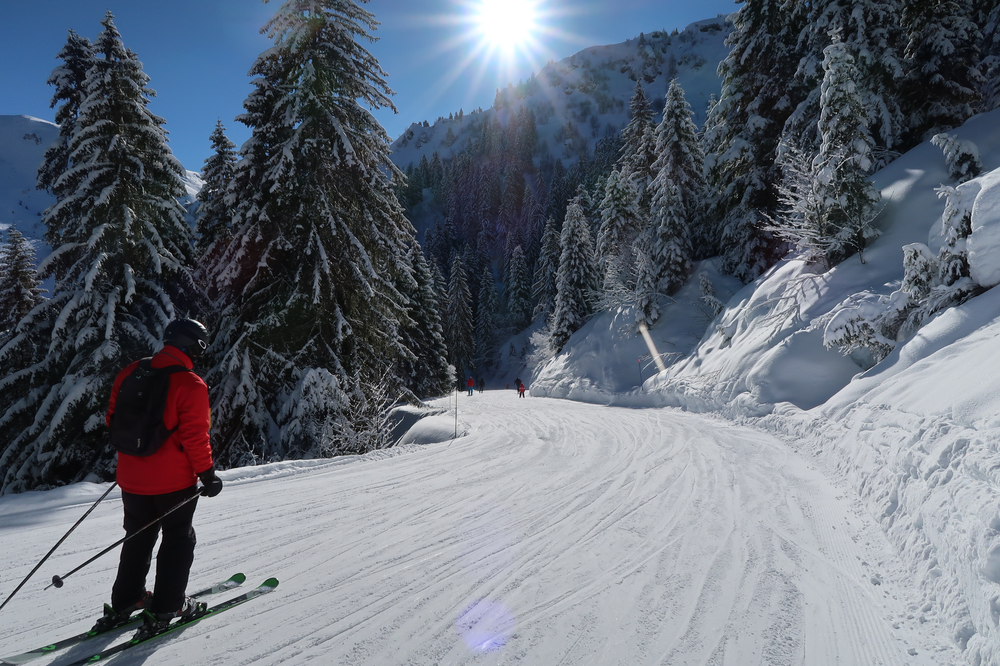

Talvikeleistä nauttii aivan eri lailla, kun alla on ammattitaidolla huolletut sukset.
Hyvin huolletut sukset auttavat voitelun kanssa pitämään hien pinnassa ja turhautumisen loitolla. Meiltä saat myös pitoteipit ja muut hiihtotarvikkeet.
Huom! Emme huolla laskettelusuksia.